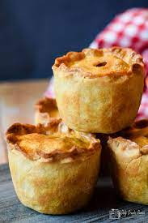

Porkless Pie

Description
I've always wanted to do a non-meat equivalent of a pork pie and at last I've achieved it - serve with home-made pickles or chutneys.
This is perfect food for outdoor eating and picnics.
Ingredients
- 25 ml milk
- 75g vegetable fat
- 225g white flour
- 1/2 tsp English mustard
- 1/2 tsp mixed spice
- 50g Puy Lentils
- 1 tbsp chopped thyme
Method
- Prepare the filling
- Boil the lentils
- Stir in peeled tomato
- Cut the dough up